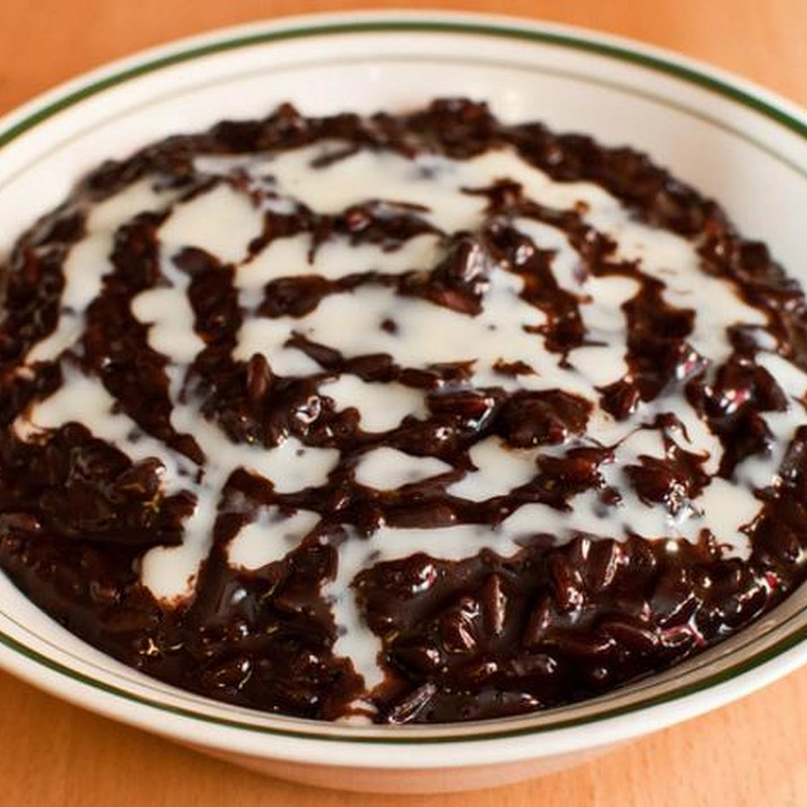

My Favorite Breakfast Recipe

Champorado
This is a simple recipe website for making Champorado, a Filipino chocolate rice porridge. It is typically served as a breakfast dish and can be enjoyed with milk or sugar.
-
Ingredients
- 5 pcs of tablea pure chocolate
- 1 & 3/4 cups of glutinous rice or sushi rice
- 3/4 cup of granulated white sugar
- 6 to 8 cups of water
- Condensed milk to taste
-
Instructions
- In a large pot, bring 6 to 8 cups of water to a boil.
- Add the glutinous rice and cook until it becomes soft and sticky, about 20-30 minutes.
- While the rice is cooking, in a separate pot, melt the tablea chocolate in a small amount of water over low heat.
- Once the rice is cooked, add the melted chocolate to the pot with the rice and stir well.
- Add sugar to taste and mix until fully dissolved.
- Serve hot with a drizzle of condensed milk on top.
Enjoy your Champorado!
This recipe is perfect for a cozy breakfast or a comforting snack. Enjoy the rich chocolate flavor and the creamy texture of this traditional Filipino dish!